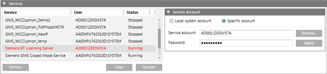

Services Expander
The Services expander displays a list of Desigo CC and extension module supported services, along with their current users and the status.
A service is visible in the Services expander only when it is present in the Windows services or in the WinServicesList.xml file located at the path …\GMSMainProject\bin.
The Services list does not contain other third-party software services installed by Desigo CC .
You can start or stop a service, and refresh the list to get the latest service status; Running, Stopped, or Paused.

Services Expander | |
Item | Description |
Service | Displays a list of services including the project's Pmon services. It also displays Desigo CC and extension module supported services that are available in the WinServicesList.xml file. |
User | Displays the current logged-in user of a service. |
Status | Displays the current status ( |
Refresh | Provides the updated status of the service. |
Start/Stop | This toggle button allows you to start and stop the service. |
Restart | This button gets enabled only when you select a service having the status |
Tips
- It is not recommended to start, stop, or change a user for the project's Pmon service, GMS_WCCILpmon_[Project Name], using the Services expander in the SMC or from the Windows Services applet.
- From the Services expander, you can change the Service account user of a listed service except the project's Pmon service, GMS_WCCILpmon_[Project Name]. When needed, the Pmon service GMS_WCCILpmon_[Project Name], Service account user can be changed using System Accounts of the Settings expander.
- The SMC does not necessarily reflect the changes done in a project's Pmon service using Windows. For example, if the Pmon service user’s password is changed externally from the Windows Services applet (not using SMC), then to synch the changed password with password of the Pmon user in SMC, you must do the following steps. Otherwise you cannot start the project.
1. From SMC tree, select System and open the Services expander.
2. Select the GMS_WCCILpmon_[Project Name].
3. Change the password of the user to the correct one.
4. Click Apply.
5. Save.
Service Account Expander
The Service Account expander allows you to configure the Service account for the selected service from the list of services in the Services expander.
This expander is enabled only when you select a service from the list of services in the Services expander.
Service Account Expander | |
Item | Description |
Local system account | Default selection. Displays the local system account user of the selected service from the Services expander. |
Specific account | Allows you to set a specific account from current station or other domains. |
Browse | Allows you to browse for the user in the current station or another domain. |
Password | Allows you to enter the password. The System user does not require a password. |
Apply | Sets the selected user as Service account user for the selected service. |